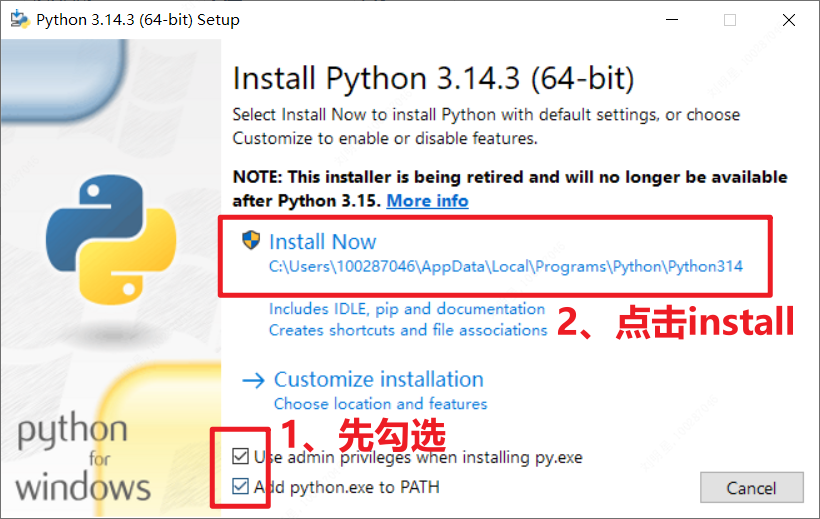

本工具是自动化RPA脚本，用于在华勤PLM系统中批量创建物料（申请料号）。
双击目录中的 python-3.14.3-amd64.exe 进行安装：

方式一：一键自动安装（推荐）
直接双击运行文件夹目录中的 安装依赖.bat 文件，自动完成所有依赖安装。
方式二：手动安装（在cmd界面运行以下代码）
pip install playwright openpyxl PyQt5 -i https://pypi.tuna.tsinghua.edu.cn/simple程序会自动调用系统已安装的 Google Chrome，无需额外安装浏览器驱动（若没有谷歌浏览器需安装）。
使用记事本打开文件夹下 批量申请料号V1.0.py 在文件开头将***改为PLM账号和密码即可自动登录:
# ================= 用户名配置 =================
user_name = "您的账号" # 改为PLM账号，如保持***则需要手动输入
user_password = "您的密码" # 改为PLM密码，如保持***则需要手动输入.xlsx 文件（可使用"料号批量申请模板.xlsx"进行更改）.xlsx 文件作为数据源，
因此文件夹下只能放一个excel文件，不要有多余excel文件；
如果需要自动上传附件:
供应商名称&规格型号示例: 三赢兴&SWM547181A0M-C-VA
双击运行 一键创建附件文件夹.py 可以批量创建文件夹（需提前填写好料号申请模板中的供应商及规格型号）:
双击 批量申请料号V1.0.py 运行程序或在命令行执行:
python 批量申请料号最终版.py程序会自动打开Chrome浏览器并执行:
注意：此时可以进行其他工作，但不要最小化浏览器，会极大减缓程序运行
[1/8] 登录系统...
[2/8] 寻找操作窗口...
[3/8] 初始化选择物料类别: xxx
[4/8] 选择产品配置: xxx ← 每行数据独立选择
[5/8] 开始填写详细属性...
[6/8] 填写制供规属性信息...
[7/8] 填写客户料号信息...
[8/8] 创建临时物料...如果Excel文件包含多个Sheet，程序会弹出选择对话框:
当Excel中有多个Sheet时，会显示包含所有类别的下拉框
Sheet名称 = 物料类别，例如：OLED显示屏、SMT屏蔽罩等
选择Sheet后，系统会自动检测Excel填写规范。如发现异常，会弹出提示窗口：
| 检测项目 | 错误说明 | 处理建议 |
|---|---|---|
| 缺失序号 | 行内有内容但未填写序号 | 补充序号或删除该行 |
| 必填字段缺失 | 表头对应内容未填写 | 补充完整必填字段 |
| 客供料信息不全 | 是否客供料选择"是"，但客户名称或客户料号为空 | 补充客户信息或改为"否" |
| 规格型号重复 | 不同行的规格和规格型号完全相同 | 检查是否重复创建 |
| 同供应商规格型号重复 | 同一供应商下，规格和型号重复 | 合并或修改规格型号 |
| 客户料号重复 | 不同行的客户料号相同 | 检查客户料号是否正确 |
| 附件文件夹缺失 | 期望的附件文件夹不存在 | 创建文件夹或忽略（如无需图纸） |
| 附件文件夹为空 | 附件文件夹内没有文件 | 放入图纸文件或忽略 |
| 包含非法字符 | 供应商名称等包含 \ / : * ? " < > | & 等字符 | 删除特殊字符 |
| 数据间存在空行 | 数据行之间存在完全为空的行 | 删除空行 |
| 存在合并单元格 | Excel中存在合并单元格 | 取消合并单元格 |
当检测到异常时，会弹出提示窗口，您可以选择：
当搜索物料类别、供应商或客户有多个匹配结果时，程序会弹出选择对话框:
当搜索结果有多个匹配项时，您有两种选择方式：
当系统检测到重复规格型号或客户料号时，会弹出"客户料号提示信息"弹窗。
程序会自动处理此类弹窗：
注意：程序会在报告中标记此类情况，请检查是否确实需要重复创建料号。
程序运行结束后，会以弹窗形式展示处理结果：
点击弹窗中的【确定】按钮关闭报告。
在命令行窗口按回车键或者叉掉窗口可以退出程序，浏览器会同步关闭，需先提交料号审批。
Sheet名称即物料类别的最后一个词条，如部件/华勤物料(数据治理)/结构料/金属件/屏蔽罩/SMT屏蔽罩，则Sheet名称为SMT屏蔽罩。
例如：创建名为"OLED显示屏"的Sheet，程序会自动将其识别为物料类别。
| 位置 | 内容 |
|---|---|
| Sheet名称 | 物料类别名称（如：OLED显示屏、SMT屏蔽罩） |
| 第1行 | 表头名称（序号、产品配置、供应商名称、规格及所有必填项信息） |
| 第2行+ | 数据行（填写具体信息） |
数据列表区（第1行起）
| 行号 | A | B | C | D | E | F | G | H | I | J |
|---|---|---|---|---|---|---|---|---|---|---|
| 1 | 序号 | 产品配置 | 供应商名称 | 规格 | 规格型号 | 采购模式 | 是否客供料 | 客户名称 | 客户料号 | 环保属性 |
| 2 | 1 | HL****AAA | 三赢兴 | *** | *** | TURNKEY | 否 | Ⅰ级(无卤欧盟环保) | ||
| 3 | 2 | HL****BBB | 三赢兴 | *** | *** | CONSIGN | 是 | 华为 | *** | Ⅰ级(无卤欧盟环保) |
每行数据独立填写产品配置，程序会为每个物料单独选择对应的产品配置。
如果多行使用相同的产品配置，可以复制粘贴相同的值。
| 列名 | 必填 | 填写说明 |
|---|---|---|
| 序号 | 必填 | 与需要申请的数量匹配，从1开始递增（必须是纯数字） |
| 产品配置 | 必填 | 每行独立填写，PLM系统中已存在的产品配置代码 |
| 供应商名称 | 必填 | 系统上必须能检索到的供应商名称 |
| 规格 | 必填 | 物料规格描述，供应商的规格型号 |
| 规格型号 | 必填 | 通常等于规格，用于制作图纸附件文件夹命名 |
| 采购模式 | 必填 | 如"TURNKEY"、"AV_NO_AP"等 |
| 是否客供料 | 必填 | 填写"是"或"否" |
| 客户名称 | 选填 | 若为客供或者采购属性为AVAP则必填 |
| 客户料号 | 选填 | 若为客供或者采购属性为AVAP则必填 |
| 环保属性 | 必填 | 默认填写"Ⅰ级(无卤欧盟环保)"即可 |
| 申请需求源 | 必填 | 根据需要默认为"资源"或"研发" |
| 器件等级 | 必填 | 可默认为"消费级" |
| 尺寸类字段 | 必填 | 根据实际词条填写，如BTB改为封装尺寸 |
| 其他PLM带*号字段 | 必填 | 根据实际类别，自由增加必填项的表头和内容 |
供应商名称&规格型号
示例: 三赢兴&SWM547181A0M-C-VA
程序会自动根据Excel中的供应商名称和规格型号查找对应文件夹并上传附件。
当搜索物料类别、供应商或客户出现多个匹配结果时，除了从列表中选择，还可以选择在PLM弹窗中手动选择。
当系统检测到相同规格型号或客户料号已存在时，会弹出"客户料号提示信息"弹窗。
程序能够自动处理此类弹窗：
程序运行结束后，会以弹窗形式展示完整的处理报告
[错误] 当前目录下未找到 .xlsx 文件
原因: 程序目录下没有Excel文件，或Excel文件正在打开中
解决方法:
.xlsx（不是 .xls）原因: 系统未安装 Google Chrome 浏览器
解决方法:
[错误] 等待登录超时（2分钟）
原因: 账号密码错误或登录过程太慢
解决方法:
user_name 和 user_password 是否正确"***"，完全手动登录现象: 弹出红色错误对话框，提示未找到物料类别/输入料号类别后一直在转圈
原因: 物料类别在PLM系统中搜不到或者偶尔的网络波动导致运行卡顿
解决方法:
现象: 弹出红色错误对话框，提示未找到产品配置
原因: Excel中填写的产品配置名称与PLM系统中不匹配
解决方法:
现象: 弹出红色错误对话框，提示未找到供应商
原因: 供应商名称在PLM系统中不存在
解决方法:
现象: 提示 "[附件] 上传出错"
原因:
解决方法:
供应商名称&规格型号现象: 日志显示创建失败，捕获到异常
常见原因及解决:
| 错误信息 | 原因 | 解决方法 |
|---|---|---|
| 必填项不能为空 | 必填字段未填写 | 在Excel中补充必填信息 |
| 物料编码已存在 | 该物料已创建 | 检查是否重复申请 |
| 请填写供应商信息 | 供应商必填但未填 | 补充供应商信息 |
| 客户名称不能为空 | 客供料为"是"但未填客户 | 补充客户信息 |
现象: 使用手动选择模式时，提示等待超时
原因: 在PLM弹窗中选择超过60秒未完成
解决方法:
现象: Python报错，程序异常退出
解决方法:
pip install --upgrade playwright openpyxl PyQt5 -i https://pypi.tuna.tsinghua.edu.cn/simple